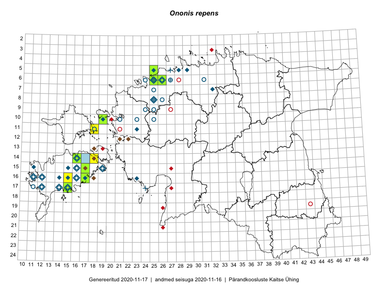

Ononis repens
Uuendatud: 2016-12-01
Kaardile koondatud taksonid: Ononis repens L.

Kaart põhineb 10 kirjel, neist vaatlusi 6 ja eksemplare 4.
Viited andmebaasikirjetele
- Meeli Mesipuu: 2015-07-10: 14-16: ala
- Karin Kikas, Elle Rajandu: 2015-07-21: 14-18: ala
- Toomas Kukk, Sander Laherand: 2016-07-05: 06-25: ala
- Sander Laherand: 2016-08-02: 06-25: GPS punkt
- Sander Laherand, Peedu Saar, Nele Jõessar: 2016-08-08: 11-18: ala
- Sirje Azarov, Indrek Tammekänd: 2016-07-18: 20-26: ala
- Peedu Saar: 2015-09-10: 16-17: GPS punkt
- Peedu Saar, Toomas Kukk: 2016-08-13: 15-17: GPS punkt
- Peedu Saar, Toomas Kukk: 2016-08-13: 15-17: GPS punkt
- Peedu Saar, Toomas Kukk, Ott Luuk, Sander Laherand: 2016-07-01: 14-16: GPS punkt